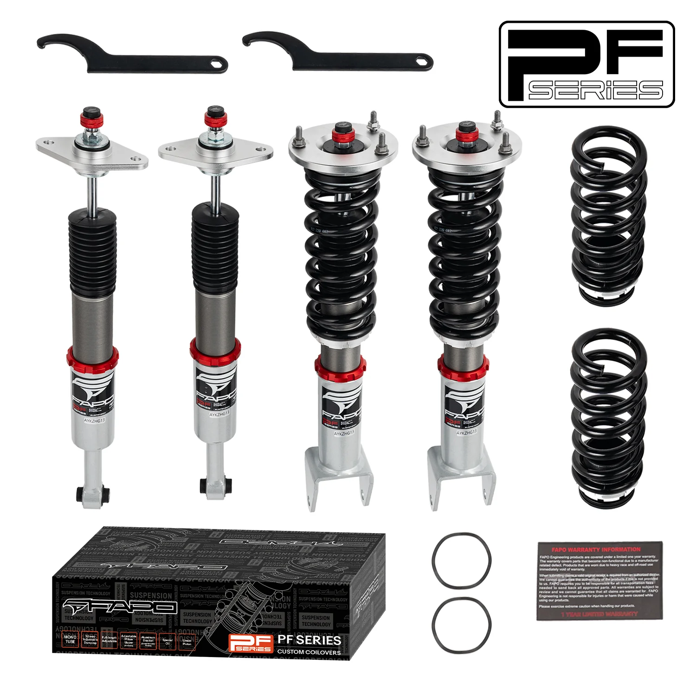

1 / 1932-stopniowe zawieszenie gwintowane Do Chrysler 300C LX 2WD 2011-2023 PF069330
Pakiet zawiera Gwinty przednie x 2 szt Gwinty tylne x 2 szt Klucz x 2 szt Notatka: Ten zestaw gwintowany ma na celu obniżenie samochodu o 1"-1,5" w porównaniu z wysokością fabryczną, nawet przy maksymalnym ustawieniu. Przed zakupem upewnij się, że odpowiada to Twoim potrzebom. Cechy produktu: 32-stopniowa regulacja tłumienia umożliwia precyzyjne dostrojenie pod kątem komfortu, jazdy po torze lub agresywnej jazdy po…
Package Includes Front coilovers x 2 pcs Rear coilovers x 2 pcs Wrench x 2 pcs Note: This coilover kit is designed to lower your car by 1"-1.5" compared to the factory height, even at its maximum setting. Please confirm this suits your needs before purchasing. Features: 32-way adjustable damping allows precise tuning for comfort, track, or aggressive street driving Mono-tube shock design provides larger oil and gas capacity Adjustable ride height for customized performance Adjustable pre-load spring tension for enhanced handling High tensile performance spring: less than 0.04% distortion after 600,000 continuous tests, with special surface treatment for durability Rubber boots on all inserts to protect the damper and keep it clean Improves handling without sacrificing ride comfort Quick and affordable way to upgrade your car's appearance Easy installation with standard tools Ideal for track, drift, fast road, and daily driving Accessories shown in photos are included Default 1-year warranty for any manufacturing defect (upgrade to 2 years with our Extended Warranty Program)
2499,99 PLN
Opis produktu
Pakiet zawiera
- Gwinty przednie x 2 szt
- Gwinty tylne x 2 szt
- Klucz x 2 szt
Notatka:Ten zestaw gwintowany ma na celu obniżenie samochodu o 1"-1,5" w porównaniu z wysokością fabryczną, nawet przy maksymalnym ustawieniu. Przed zakupem upewnij się, że odpowiada to Twoim potrzebom.
Cechy produktu:
- 32-stopniowa regulacja tłumienia umożliwia precyzyjne dostrojenie pod kątem komfortu, jazdy po torze lub agresywnej jazdy po ulicy
- Konstrukcja amortyzatora jednorurowego zapewnia większą pojemność oleju i gazu
- Regulowana wysokość jazdy dla spersonalizowanych osiągów
- Regulowane napięcie sprężyny wstępnego obciążenia dla lepszej obsługi
- Sprężyna o wysokiej wytrzymałości na rozciąganie: odkształcenie mniejsze niż 0,04% po 600 000 ciągłych testach, ze specjalną obróbką powierzchni zapewniającą trwałość
- Na wszystkich wkładkach gumowe ochraniacze chroniące amortyzator i utrzymujące go w czystości
- Poprawia prowadzenie bez utraty komfortu jazdy
- Szybki i niedrogi sposób na poprawę wyglądu Twojego samochodu
- Łatwa instalacja przy użyciu standardowych narzędzi
- Odpowiedni na tor, do driftu, szybkiej jazdy drogowej i codziennego użytkowania
- W zestawie akcesoria widoczne na zdjęciach
- Standardowa roczna gwarancja na każdą wadę produkcyjną (rozbudowa do 2 lat w ramach naszego programu rozszerzonej gwarancji)
Package Includes
- Front coilovers x 2 pcs
- Rear coilovers x 2 pcs
- Wrench x 2 pcs
Note: This coilover kit is designed to lower your car by 1"-1.5" compared to the factory height, even at its maximum setting. Please confirm this suits your needs before purchasing.
Features:
- 32-way adjustable damping allows precise tuning for comfort, track, or aggressive street driving
- Mono-tube shock design provides larger oil and gas capacity
- Adjustable ride height for customized performance
- Adjustable pre-load spring tension for enhanced handling
- High tensile performance spring: less than 0.04% distortion after 600,000 continuous tests, with special surface treatment for durability
- Rubber boots on all inserts to protect the damper and keep it clean
- Improves handling without sacrificing ride comfort
- Quick and affordable way to upgrade your car's appearance
- Easy installation with standard tools
- Ideal for track, drift, fast road, and daily driving
- Accessories shown in photos are included
- Default 1-year warranty for any manufacturing defect (upgrade to 2 years with our Extended Warranty Program)
FAPO Polska
Ten produkt obsługujemy lokalnie
Autoryzowana obsługa
FAPO Polska prowadzi katalog, kontakt i zamówienia bez odsyłania klienta do zewnętrznych sklepów.
Dobór po aucie
Sprawdzamy dopasowanie produktu do pojazdu, rocznika i wersji przed finalizacją zamówienia.
Wsparcie po zakupie
Masz kontakt w Polsce w sprawach zamówień, wysyłki, gwarancji i zwrotów.